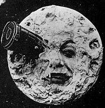

La Historia del Cine
El cine, como forma de arte y medio de comunicación, tiene una historia rica y fascinante. Sus orígenes se remontan a finales del siglo XIX, cuando inventores como los hermanos Lumière en Francia y Thomas Edison en los Estados Unidos desarrollaron dispositivos capaces de capturar y proyectar imágenes en movimiento. Estos primeros inventos marcaron el inicio de una nueva era en la que el entretenimiento visual comenzó a evolucionar rápidamente.
A lo largo de las primeras décadas del siglo XX, el cine mudo se consolidó como una de las formas de entretenimiento más populares. Con directores pioneros como Georges Méliès y D.W. Griffith, el cine empezó a experimentar con narrativas visuales complejas y efectos especiales. Durante esta era, las películas eran acompañadas por música en vivo, lo que añadía una dimensión especial a la experiencia cinematográfica.

La llegada del sonido en el cine a finales de los años 1920 marcó una revolución en la industria. Las primeras películas sonoras, como *El cantante de jazz*, demostraron el potencial del audio sincronizado para añadir realismo y emoción a las historias. Esta innovación trajo consigo una nueva era, conocida como el "cine sonoro", y cambió para siempre la forma en que se producían y disfrutaban las películas.
Con el tiempo, la tecnología del cine continuó avanzando. La aparición del cine en color, gracias a procesos como el Technicolor en los años 1930, permitió a los cineastas explorar una paleta de emociones y estilos visuales. La capacidad de mostrar imágenes en color realzó la experiencia visual y permitió a las audiencias sumergirse aún más en los mundos ficticios creados por los realizadores.
El cine ha seguido evolucionando con cada avance en la tecnología. Desde la llegada de los efectos digitales y la animación por computadora hasta la creación de experiencias en 3D y realidad aumentada, cada etapa ha ampliado las fronteras de lo que es posible en el cine. Hoy en día, el cine es una industria global que sigue innovando, manteniendo su estatus como una de las formas de arte y entretenimiento más influyentes en la sociedad moderna.